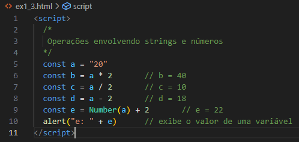
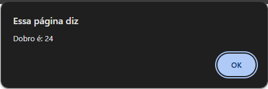
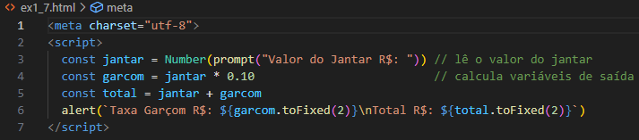

Voltar para a página principal
CAPÍTULO 01 - Introdução
1.3 JavaScript
A linguagem JavaScript foi criada pela Netscape Communications Corporation junto com a Sun Microsystems. Sua primeira versão foi lançada em 1995. Em 1996, a fim de evitar a guerra dos browsers, a Netscape decidiu entregar o JavaScript para a ECMA (European Computer Manufacturers Association). Em 1997, foi lançada a primeira edição da linguagem gerenciada por essa associação. Por isso, a linguagem JavaScript também é chamada de ECMAScript e as versões da linguagem estão associadas a esse nome.
No endereço https://www.ecma-international.org/ você pode acompanhar as novidades da linguagem, conforme ilustra a figura:
A linguagem JavaScrit é utilizada para definir o comportamento dos elementos da página. Os códigos escritos em JavaScript, também chamados de scripts, são interpretados diretamente pelos navegadores web. Embora também seja crescente o número de aplicações desenvolvidas com a linguagem para rodar no lado do servidor.
JavaScript também é uma linguagem orientada a objetos.
1.5 Saída de dados com alert() e console.log()
Abaixo, a primeira imagem mostra o código no VSCode, a segunda imagem mostra o resultado que vai aparecer no navegar. (Assim que a página for aberta automaticamente já vai abrir essa caixa de diálogo junto).
Para visualizar a saída gerada pelo comando console.log(), você deve procurar por Ferramentas do Desenvolvedor no seu browser e selecionar o item console. No Google Chrome, você pode apertar a tecla F12. A terceira imagem mostra o resultado que vai aparecer no console.
 |
 |
 |
1.6 Variáveis e Constantes
As variáveis são espaços alocados na memória do computador que permitem guardar informações e trabalhar com elas.
Em JavaScript, os nomes das variáveis não podem:
- Conter espaços.
- Começar por número.
- Conter caracteres especiais, como +, -, *, /, %, (, ), !, @, #.
- Utilizar nomes de palavras reservadas da linguagem, como function, var, new, for, ou return.
Variáveis escritas com letras maiúsculas são diferentes de variáveis escritas com letras minúsculas. O uso do caractere “_” é válido. Porém dê preferência para o padrão denominado camelcase (inicial da segunda palavra maiúscula).
São exemplos de nomes válidos de variáveis: cidade, nota1, primeiroCliente, novoSalario, precoFinal, dataVenda.
Para declarar uma variável em JavaScript, podemos utilizar os comandos var, let ou const. Nas últimas versões do JavaScript, passou a recomendar o uso de const ou let.
Atribuição é feita com o sinal de igual "=". Exemplo: const idade = 35
O uso de const tem se tornado padrão da linguagem. Declarar uma variável com const serve para indicar que essa variável deve possuir uma única atribuição de valor e não será alterada no decorrer do programa. Então, caso o conteúdo da variável possa ser alterado, declare-a com let. Em todos os demais casos, opte pelo const.
1.7 Entrada de dados com prompt()
Para receber dados do usuário em JavaScript, uma das formas é utilizar o comando (método) prompt(), que exibe uma caixa com um texto para e um espaço para digitação.
Outra forma de exibir mensagens que contenham um texto fixo e o conteúdo de uma variável em JavaScript é com o uso da chamada Template Strings. Para isso, deve-se delimitar a mensagem entre duas ´´ (crases) e inserir o nome das variáveis usando a sintaxe: ${nomeVar}. Observe a linha a seguir:
alert(`Olá ${nome}`);
O uso de ponto e vírgula “;” no final dos comandos em programas JavaScript é opcional.
1.8 Comentários
Em JavaScript, os comentários podem ser inseridos para uma linha ou várias, utilizando os seguintes caracteres:
// para comentários de uma linha
/*
para comentários de duas
ou mais linhas
*/
1.9 Tipos de Dados e conversões de tipo
Em JavaScript, os tipos principais de dados são strings (variáveis de texto), números e valores booleanos (true ou false).
No exemplo abaixo, o resultado do cálculo é exibido ao lado de cada variável como um comentário (//).
Nesse exemplo, a variável "a" do tipo string recebe “20” (const a = “20”). Ela é entendida como sendo do tipo string por estar delimitada por aspas.
Nas operações de multiplicação, divisão e subtração, a linguagem converte esse texto em número e o valor retornado está de acordo com o esperado.
Contudo, quando realizamos a adição, o valor de retorno é diferente do padrão, pois a linguagem CONCATENA (+) o texto com o número.
Para resolver esse problema, precisamos converter o texto em número. Isso pode ser feito pelos métodos Number(), parseInt() e parseFloat(). Vamos utilizar o método Number() para facilitar o processo de aprendizagem. Dessa forma, modifique a linha que declara a variável “e” para conter o método Number():
const e = Number(a) + 2 // e = 22
|  |
Agora, a variável "a" é inicialmente convertida em número, e, após, ocorre a soma do valor 2, gerando como resultado o valor 22.
E, para converter variáveis para o tipo string, devemos utilizar o método toString().
As entradas de dados realizadas com o método prompt() criam variáveis do tipo string, exceto se houver uma função de conversão de dados como Number(). Exibir uma variável que não recebeu uma atribuição de valor vai gerar uma saída “undefined”.
O exemplo a seguir 1.4 declara variáveis e exibe seus tipos a partir do comando TYPEOF.
Também é possível verificar se o número é inteiro ou possui decimais: Number.isInteger() faz essa verificação:
1.10 Exemplos de entrada, processamento e saída
Vimos que no geral, para elaborar um programa simples, é necessário realizar três etapas: entrada, processamento e saída. Vamos agora implementar alguns exemplos de algoritmos de programação sequencial que realizam essas etapas.
Abaixo, um exemplo de programação sequencial:
a) Elaborar um programa que leia um número. Calcule e informe o dobro desse número.
|  |
b) Elaborar um programa que leia dois números. Calcule e informe a soma desses números.
c) Elaborar um programa que leia o valor de um jantar. Calcule e informe o valor da taxa do garçom (10%) e o valor total a ser pago.
Primeiro fazer um exemplo de possíveis dados:
Valor do jantar R$: 80.00
Valor do Garçom R$: 8.0
Total a pagar R$: 88.00
Tenha cuidado em digitar valores com decimais separados por ponto, e não vírgula. Observe que o método toFixed(2) é adicionado às variáveis de saída. Ele serve para indicar que o valor a ser apresentado deve conter 2 casas decimais.
d) Elaborar um programa que leia a duração de uma viagem em dias e horas. Calcule e informe a duração total da viagem em números de horas.
Dados:
Nº Dias: 2
Nº Horas: 5
Total de Horas: 53
1.11 Exercícios
a) Elaborar um programa que leia um número. Calcule e informe os seus vizinhos, ou seja, o número anterior e posterior.
b) Elaborar um programa para uma pizzaria, o qual leia o valor total de uma conta e quantos clientes vão pagá-la. Calcule e informe o valor a ser pago por cliente.
c) Elaborar um programa para uma loja, o qual leia o preço de um produto e informe as opções de pagamento da loja. Calcule e informe o valor para pagamento à vista com 10% de desconto e o valor em 3x.
d) Elaborar um programa que leia 2 notas de um aluno em uma disciplina. Calcule e informe a média das notas.